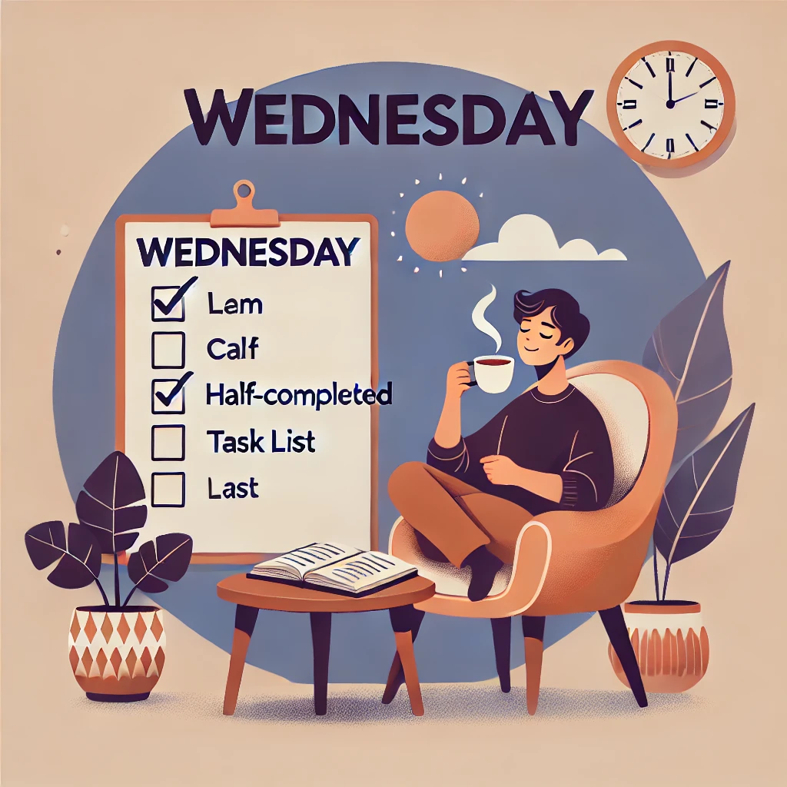

A szerda egy különös nap. Már túl vagyunk a hét elején, de még messze a hétvége. Reggel a szokásos kávémmal ülök le a napirendem elé, és azon gondolkodom, hogy vajon ma mit érhetek el. A szerda mindig kicsit olyan, mintha a hét "hídja" lenne - összeköti a hétfőt és a pénteket.
Dél körül érzem, hogy kezd alábbhagyni a lendületem. Az ebédszünet szerencsére megment. Egy jó leves és néhány kollégával folytatott beszélgetés segít, hogy ne adjam fel. A szerda délutánja mindig a kompromisszumokról szól: befejezni, amit elkezdtem, de nem túlzásba esni.
Este, ahogy hazaérek, rájövök, hogy a hét fele már mögöttem van. Ez ad egy kis reményt és motivációt a következő napokra. A szerda nem a legizgalmasabb nap, de néha pont az ilyen napok a legfontosabbak, mert lehetőséget adnak a megállásra és az újratervezésre.
